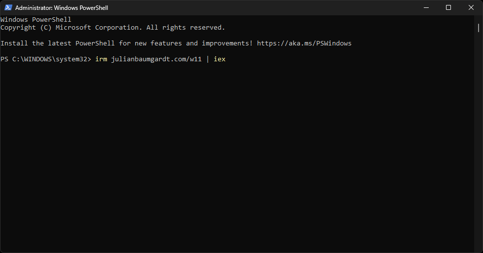
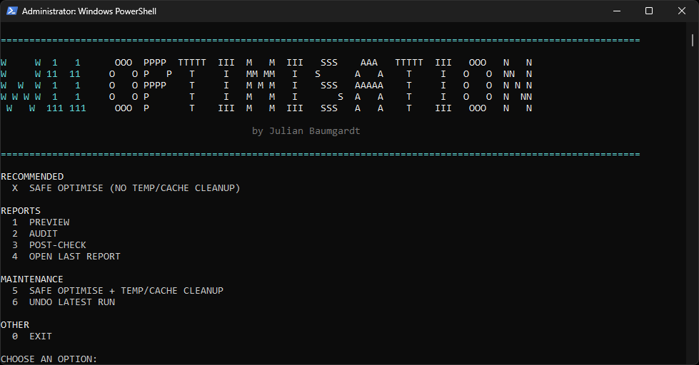
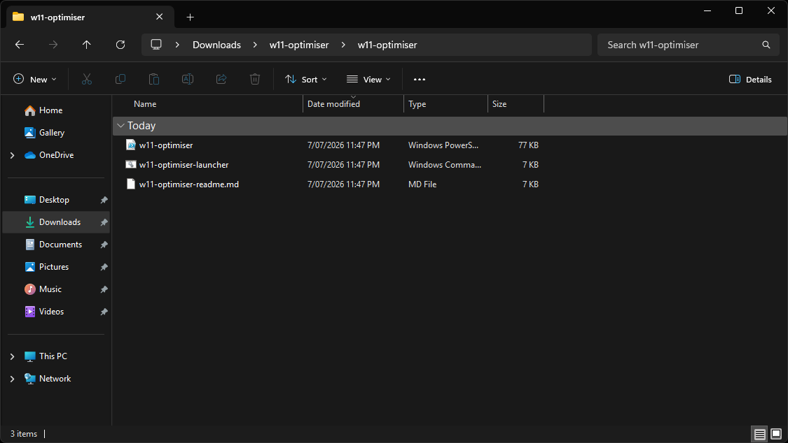

W11 Optimiser
A safe Windows 11 optimiser with two ways to run it: one PowerShell command, or a downloadable ZIP with a double-click launcher. The PowerShell method checks the downloaded script SHA-256 before opening the menu. Nothing applies until the menu asks for confirmation.
PowerShell Method
Run From PowerShell
Open Windows PowerShell as Administrator, paste this command, then press Enter. The command downloads the latest optimiser and opens the menu.
irm julianbaumgardt.com/w11 | iex
- 1Open PowerShell as Administrator.
- 2Paste the command above.

- 3Wait for the W11 Optimiser menu to appear.
- 4Press
Xfor the recommended safe run, or choose a report mode first.

Download Method
Download, Extract, Run
Use this method if you prefer seeing the files first. Download the ZIP, extract it, then double-click w11-optimiser-launcher.cmd.
- 1Download
w11-optimiser.zip. - 2Extract the ZIP folder.
- 3Open the extracted
w11-optimiserfolder. - 4Double-click
w11-optimiser-launcher.cmd.

Improvements In Version 1.1
Original Plan Stays Untouched
Each safe run creates its own temporary W11 Optimiser power plan. Undo returns to the original plan and removes the temporary one.
Backup Before Change
If an existing registry key cannot be backed up, the run stops before it changes any settings.
Checked Download
The PowerShell method checks the downloaded script SHA-256 against the published release manifest before the menu opens.
Focused Undo
Undo restores only the values this tool changed. It does not recursively delete whole registry paths.
What Happens After A Run
Local Report
Safe runs create a local browser report. It shows what changed, what was skipped, what was not touched, warnings, errors, and next steps.
No Uploads
The report is generated on the PC and opens from a local file. The demo page below is sanitized, so it does not include any real computer name, username, folder path, or adapter details.